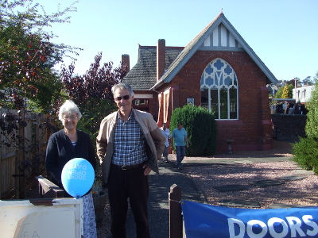
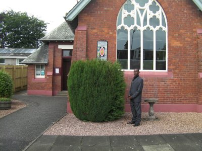
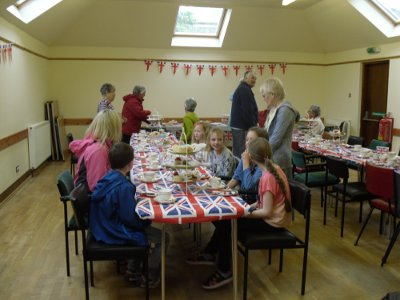
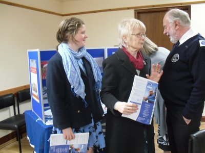
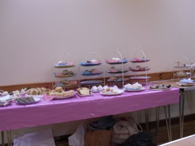
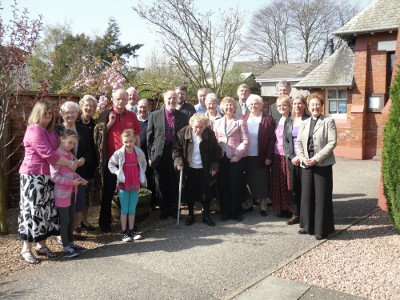

Past Events
Open Doors Day
2013-09-08:
St Margaret’s took part in East Fife’s “Doors Open” day.

Malawian Visitor
2012-06-24:
Alufeyo Manda, a librarian from Muzuzu in Malawi, received a warm welcome from the congregation and during the service he shared his faith journey and other aspects of his life as well as teaching us a Christian song from his home church. Alufeyo is in the UK on a one month study tour sponsored by the Association of Librarians in the Landbased Colleges and Universities and hosted by a number of colleges including Elmwood College in Cupar.

Diamond Jubilee Afternoon Tea
2012-06-17:
The day may have started wet and cold but the skies brightened a little after lunch to allow people to make it along to our Dickson Hall without arriving soaked to the skin and what a party we enjoyed – the décor, the wonderful spread of eats and the fellowship shared by all who came along was almost palpable and Margaret’s appropriately themed quiz brought out the competitive spirit in us all!

Sea Sunday
2012-05-13:
Members of our regular congregation were joined by a number of visitors for Sea Sunday and we welcomed Commander Jim McRae and his wife Betty to share our worship. Jim is Director of Development for the Mission to Seafarers Scotland. Our retiring collection in aid of their work was augmented with the proceeds from the afternoon tea we held on 6th May and Jim and Betty also left St Margaret’s with three boxes of knitted hats and scarves for distributing to the seamen they support.

Afternoon Tea
2012-05-06:
On Sunday 6th May members of the community joined us for traditional Afternoon Tea – our new cake stands were groaning with the lovely home baking. After sampling the delights and sharing news everyone enjoyed taking part in a general knowledge quiz.

Bishops visit
2011-11-20:
